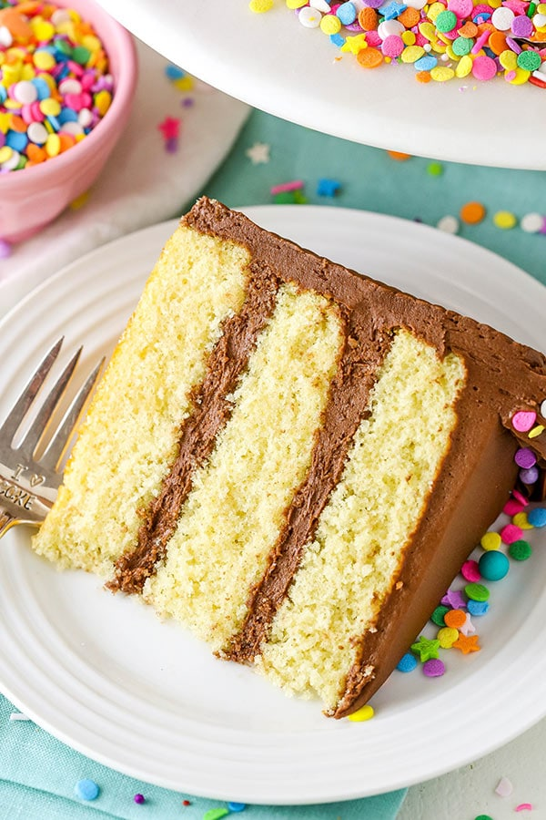

Jan 25
Classic Yellow Cake with Chocolate Frosting
Birthdays are a memorable occasion in a person's life, and unless you hate cake, it's usually the main focus at every birthday party. While you can grab a basic frosted cake at the store, it's pretty simple to whip one up from scratch. There's no doubt that this cake and frosting recipe is much better than many store-bought options. Plus, the gift that says "I love you" best is food, specifically baked goods. (from tastingtable.com).